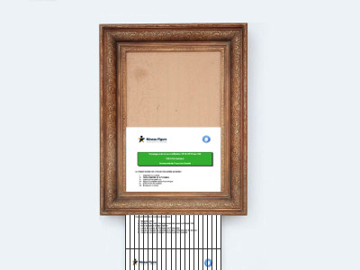

Breaking news : le CMI Info ne sera pas réaccrédité en 2019 !
La nouvelle est tombée comme un couperet en ce début de vacances de Noël.
Tu parles d'un cadeau ! commente Loïc. Tout ça pour rien... Après l'effondrement de notre tour en spaghettis, et l'examen de PFS, c'est vraiment la conclusion d'une année ratée de bout en bout.
Les étudiants du CMI Informatique de l'Université de Franche-Comté ont eu la surprise d'apprendre dans nos colonnes que le dossier de réaccréditation de la filière n'avait pas été transmis à temps au Réseau Figure par le responsable du cursus, Frédéric Dadeau. Ce dernier nous explique :
J'étais en train de préparer la case 24 du calendrier de l'avent CMI. Je n'ai pas vu le temps passer, du coup j'ai laissé filer la date. Tant pis. En même temps, cette expérience montrera aux étudiants l'importance de respecter les deadlines.
Sans réaccréditation, la filière Informatique ne peut en effet pas continuer à proposer le parcours CMI et ne pourra même pas délivrer le label à sa première promotion qui terminera en juin prochain son Master 2.
Abasourdis, les étudiants du CMI Info ont, dans la foulée, reçu une seconde (mauvaise) nouvelle qui sonne comme une double peine :
Etant donné que l'Université s'est engagée à ce que tous les étudiants qui ont commencé le CMI puissent aller jusqu'au bout, et vu que le CMI Info ne sera pas malheureusement pas réaccrédité, on va donc vous répartir dans les autres CMI.
Félix, ex-CMI Info et désormais nouvel étudiant du CMI SCUBE, s'insurge :
Tout ça pour une mauvaise resucée de notre TP de Publication Web de 2016, c'est vraiment minable. Alors que le responsable de mon nouveau CMI, lui, il a vraiment payé de sa personne pour faire quelque chose d'original !
Quant à l'ancien directeur du CMI Informatique, il a quitté l'Université de Franche-Comté dans la précipitation, et aurait été vu en train de franchir la frontière avec la Bourgogne aux alentours du 23 décembre. On doute de jamais le revoir dans les parages.